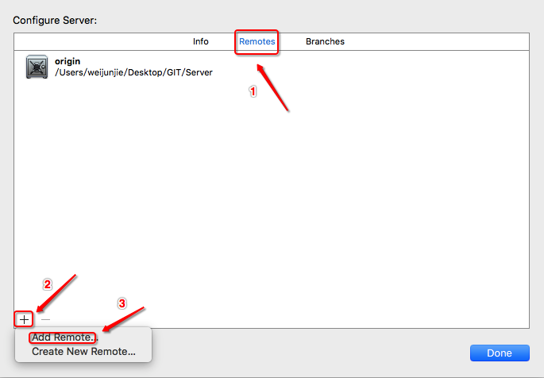
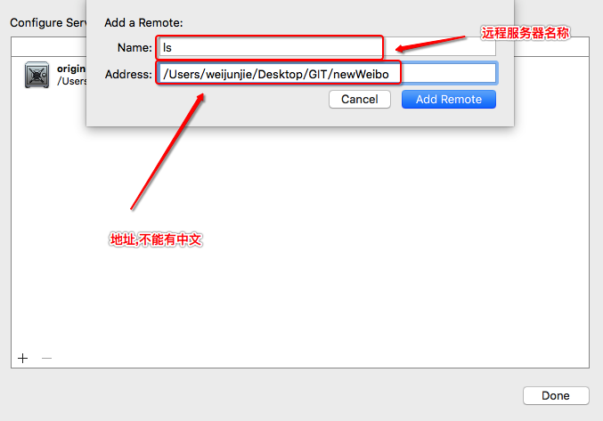
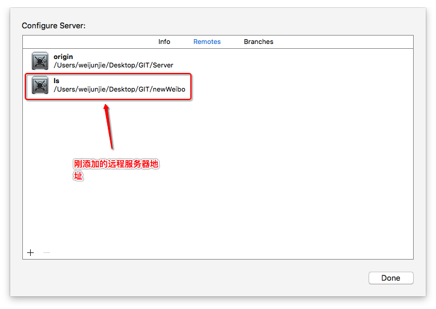
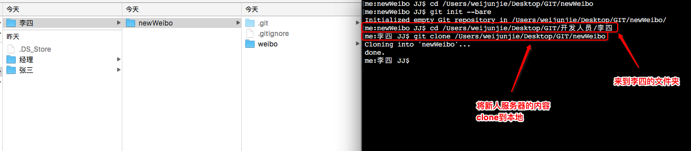

XCode->新人服务器搭建
- 一.创建新人服务器
1.在Server同级目录下创建一个"newWeibo"文件夹,并初始化共享版本库 git init --bare
2.打开经理的微博项目,之后配置远程服务器,->Source Control ->master->Configure Server
3.点击加号添加远程服务器
4.填写远程服务器的地址与名称
5.添加后的状态6.将weibo项目push到新建的远程服务器
- 二.李四获取源代码
开发人员创建李四的文件夹,clone新人服务器的所有东西到李四文件夹 git clone 新人服务器地址 - 三.总结
搭建新人服务器的主要目的是为了保证服务器的代码不会受到新人随意修改